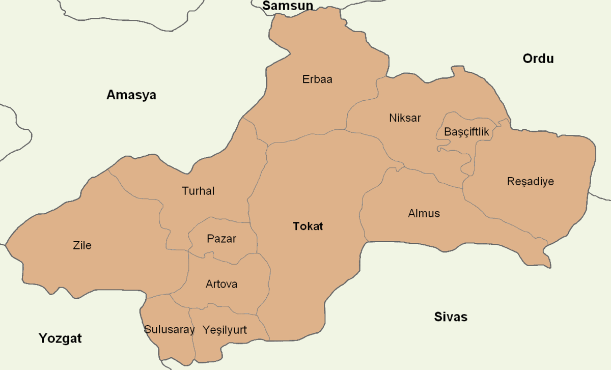
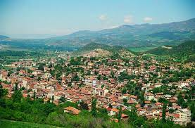
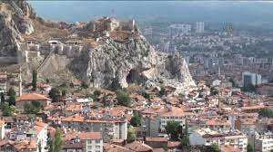
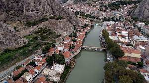
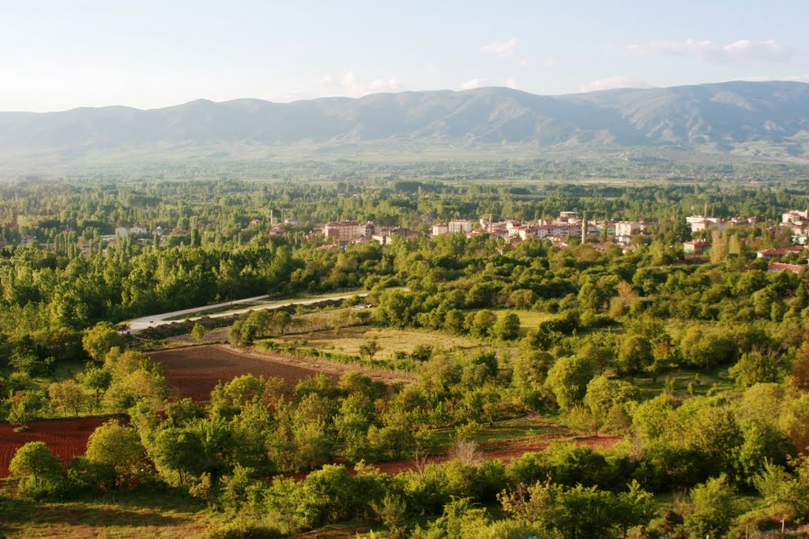

Tokat

Tokat ili, Türkiye'nin Karadeniz Bölgesi'nde yer alan illerinden biridir. Kuzeyde Samsun, kuzeydoğuda Ordu, doğu ve güneyde Sivas, güneybatıda Yozgat ve batıda Amasya illeriyle komşudur. İlçelerinden Yeşilyurt ve Sulusaray İç Anadolu Bölgesi'nde kalır.1943 yılında Taşova,1944’te Artova ve Turhal, 1954 yılında Almus,1987 yılında Pazar ve Yeşilyurt,1990 yılında Sulusaray ve Başçiftlik ilçeleri kurulmuştur. 2010 TUIK verilerine göre merkez ilçeyle beraber 12 ilçe, 64 belde ve 583 köy vardır.
"Tokat" adının kaynağı hakkında değişik rivayetler vardır. Bunlar; Togayıt Türkleri tarafından kurulmuş ve ismin de buradan geldiği, bir diğeri de surlu kent manasına gelen Toh-kat'tan geldiğidir. Evliya Çelebi ise Tokat Kalesinin Amalika Kavminden efsanevi bir kahraman olan "Dok-Ad"ın inşa ettiğini ve ''Tokat'' isminin buradan geldiğini yazmaktadır.
İklimi

Tokat İli; İç Anadolu İklimi, İç-Doğu Anadolu İklimi, Karadeniz iklimi ve Orta Karadeniz iklimi arasında bir geçit özelliği gösterir. Uzun yıllar ortalamasına göre yıllık ortalama sıcaklık; en düşük 8,1 °C en fazla 14,2 °C’dir. Uzun yıllar ortalamasına göre ortalama yağış; 381,7 mm ile 586,2 mm arasındadır. Ortalama nispi nem; % 56 ile % 73 arasında değişmektedir. Yağışlar aylara göre farklılıklar göstermektedir.
Dağları

Mamu (1770 m.), Yaylacık (1620 m.), Deveci (1892 m.), Bugalı (1945m) , Dumanlı (2200 m.), Çamlıbel (2020 m.), Akdağ (1900 m.).
Akarsuları

Yeşilırmak, Tozanlı Kolu, Kelkit Kolu, Çekerek Kolu, Tokat Kolu, Kuruçay Kolu, Güllin Kolu, Darı Deresi Kolu, Cırcır kolu.
Ovaları

Kazova, Omala Ovası, Turhal Ovası, Niksar Ovası, Erbaa Ovası, Artova Ovası, Zile Ovası, Tokat Ovası,Pazar Ovası, Artova Ovası.